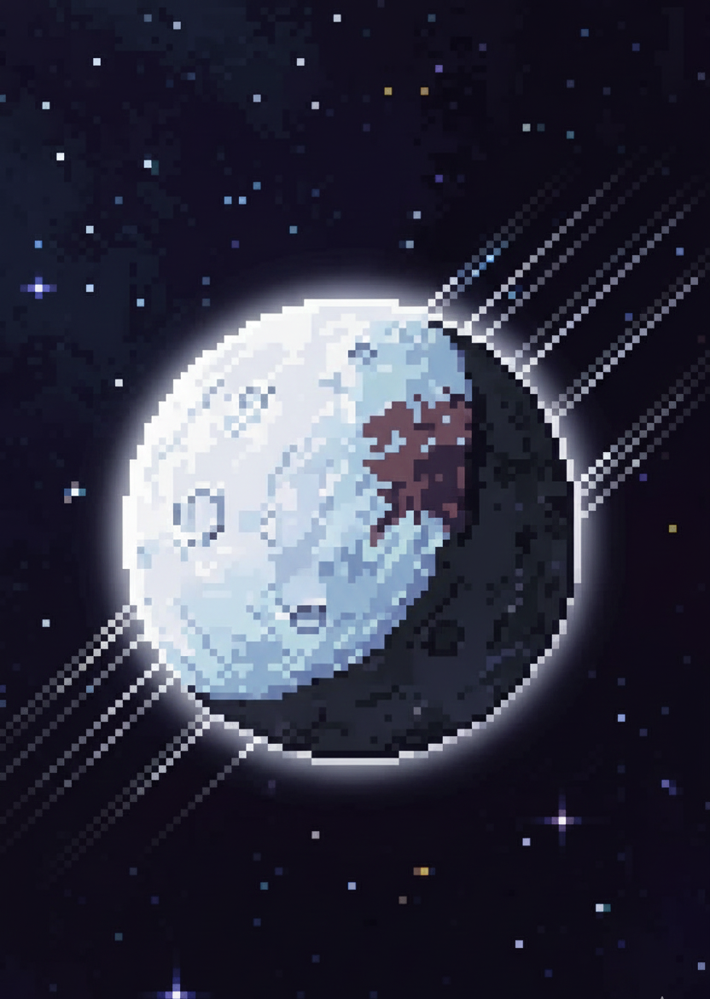
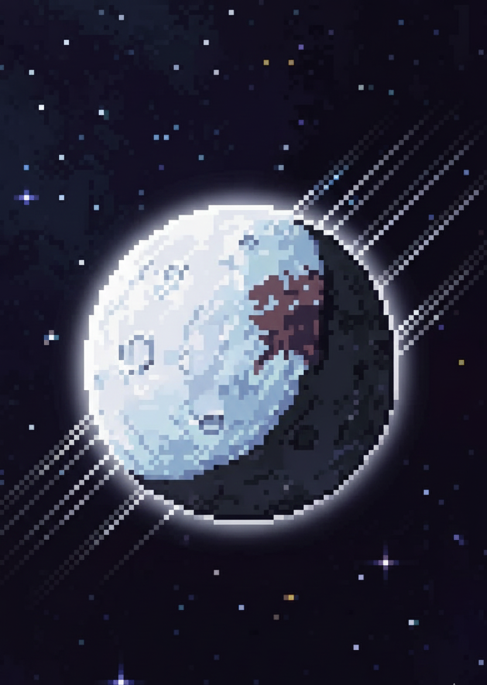
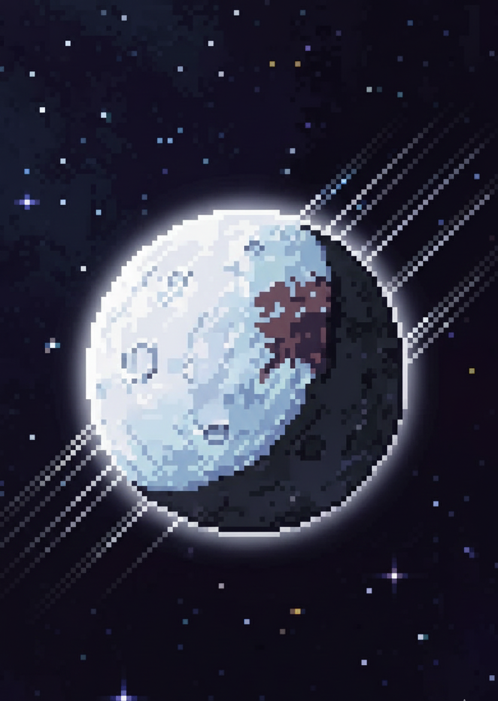

Type: Dwarf Planet
Diameter: ~2,326 km
Mass: ~0.0028× Earth’s mass
Moons: 1 (Dysnomia)
Length of day: ≈ 25.9 hours
Length of year: ≈ 558 Earth years
Distance from Sun: ~10.1 billion km (varies due to elongated orbit)
Average temperature: ≈ −231°C
Composition: Ice-rich surface with methane and possibly nitrogen frost
Eris is one of the most massive known dwarf planets, with a bright, icy surface covered in frozen methane. When Eris is far from the Sun, its atmosphere collapses and freezes onto the ground. As it moves closer, the frost may turn back into a thin gas. Its highly reflective surface makes it one of the brightest objects in the Kuiper Belt.
No spacecraft has visited Eris yet. Most of what we know comes from telescopic observations and the study of its moon Dysnomia, which helped scientists calculate its mass and density.
Future mission concepts propose sending orbiters or flyby spacecraft to explore dwarf planets like Eris, Makemake, and Haumea. These missions aim to study their surfaces, atmospheres, and origins to better understand the outer Solar System.
